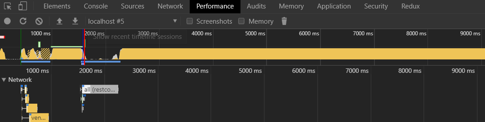

<br>
<br>
<h4>Steps:</h4>
<h6>1.Open DevTools and go to Network Tab</h6>
<h6>2.Select the request or the files you want to check!</h6>
<br><br>
<h3>Getting All Countries HTTP Request!</h3>
<hr>
<div class="row">
  <div class="col-md-3"><input placeholder="Type Your Country" type="text" [(ngModel)]="filterCountryValue"></div>
  <div class="col-md-3"><button (click)="findCountriesByName(filterCountryValue)">Find Countries!</button></div>
  <div class="col-md-6">{{filteredCountries | json}}</div>
</div>
<br>
<br>
<button (click)="getAllCountries()">Get All Countries</button>
<br>
<br>
<table id="countries" *ngIf="countries">
  <tr>
    <th>Name</th>
    <th>Capital</th>
    <th>Region</th>
  </tr>
  <tr *ngFor="let country of countries">
    <td>{{country.name}}</td>
    <td>{{country.capital}}</td>
    <td>{{country.region}}</td>
  </tr>
</table>